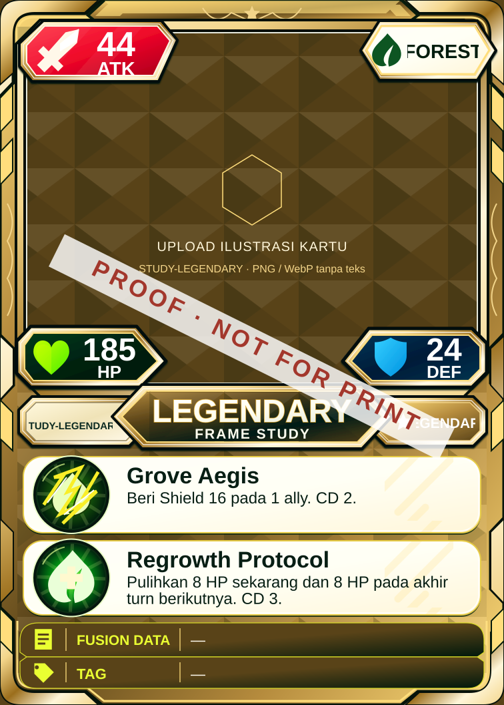
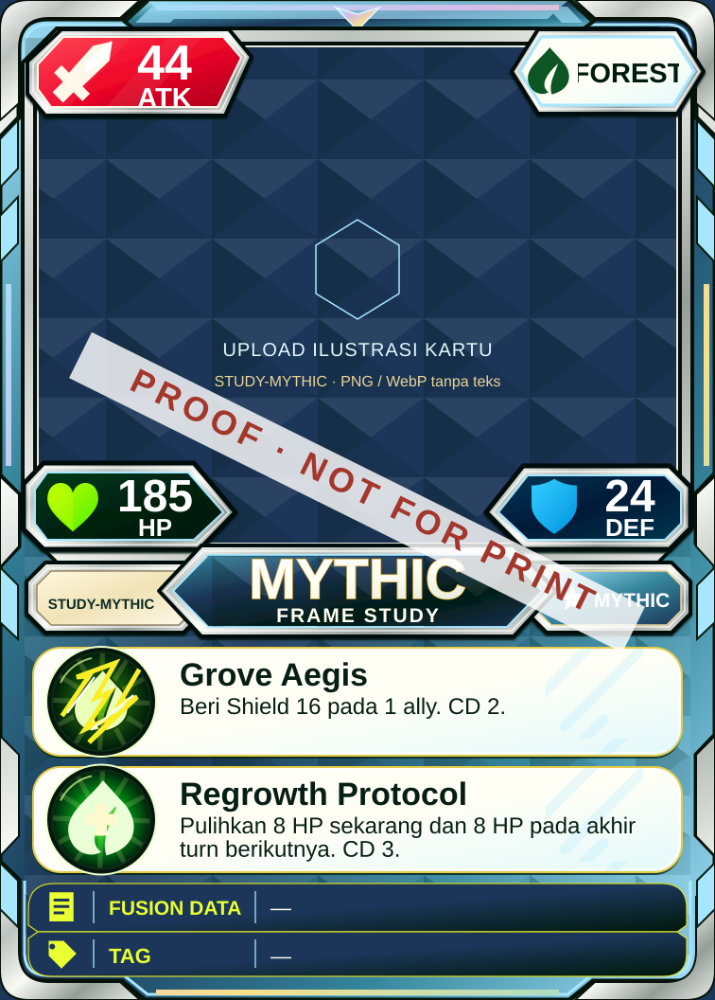
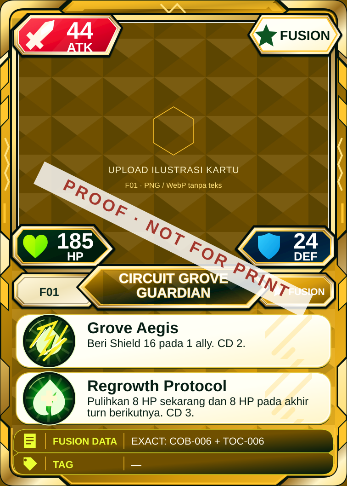

Common

Self-contained SVG proofs with embedded reference frame decorations and dynamic card data. Final character artwork is still required. The approved shared back is installed. Legendary and Mythic use preview data outside the pilot pool.




